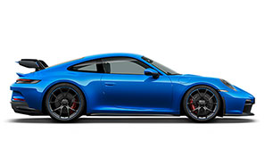

Porsche 911 GT3
 510 CV0 - 100 Km/h → 3.4 s
318 Km/h
Configurar
El Porsche 911 GT3 es un automóvil deportivo coupé de dos puertas, con motor trasero en disposición bóxer de 6 cilindros y de tracción trasera.
El Porsche 911 GT3 es un automóvil deportivo coupé de dos puertas, con motor trasero en disposición bóxer de 6 cilindros y de tracción trasera.
 420 CV
420 CVEl Porsche Cayman es un automóvil deportivo de lujo de dos asientos con tracción trasera y motor en posición central producido por Porsche AG de Alemania.
 761 CV
761 CVEl Porsche Taycan, ha sido denominado internamente como J1 y como Mission E en su presentación,1 es un automóvil eléctrico de altas prestaciones y 4 plazas.
 480 CV
480 CVEl Porsche Panamera es un automóvil de lujo del segmento F, producido por el fabricante alemán de automóviles Porsche. Se trata de un automóvil sedán de cuatro puertas.
El Porsche Macan es un automóvil todoterreno de lujo del segmento D desarrollado por el fabricante alemán Porsche. Está basado en el Audi Q5.
El Porsche Cayenne es un automóvil todoterreno de lujo del segmento E producido por el fabricante de automóviles alemán Porsche.